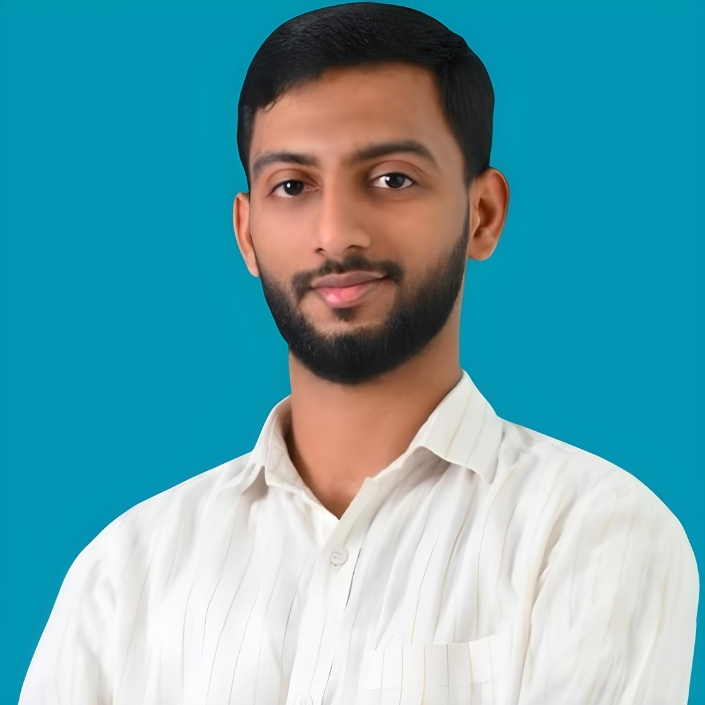

MUHAMMED SHAFEEK
Email :
mdshafeeksa@gmail.com
|
 |
I’m a self-taught MERN Stack Developer with a strong passion for
building full-stack web applications that solve real-world problems. My
journey began with a deep curiosity for how the web works, which led me to
independently learn and master technologies like
MongoDB, Express.js, React.js, and Node.js.
Through hands-on projects and continuous learning, I’ve developed solid
experience in designing RESTful APIs, building responsive front-ends, and
managing data with NoSQL databases. I’ve worked on several projects
including portfolio websites, CRUD-based admin panels, and basic
e-commerce platforms — all built from the ground up using the MERN stack.
What drives me is a love for clean code, user-centric design, and the
satisfaction of turning ideas into working products. I’m always eager to
learn new tools and frameworks, contribute to open-source, and grow as a
developer in collaborative environments.
Pediatric Emergency Center
Hamad Medical Corporation
Doha, Qatar
2020 - 2025
Southern Document Clearance & Services
Doha, Qatar
2017 - 2020